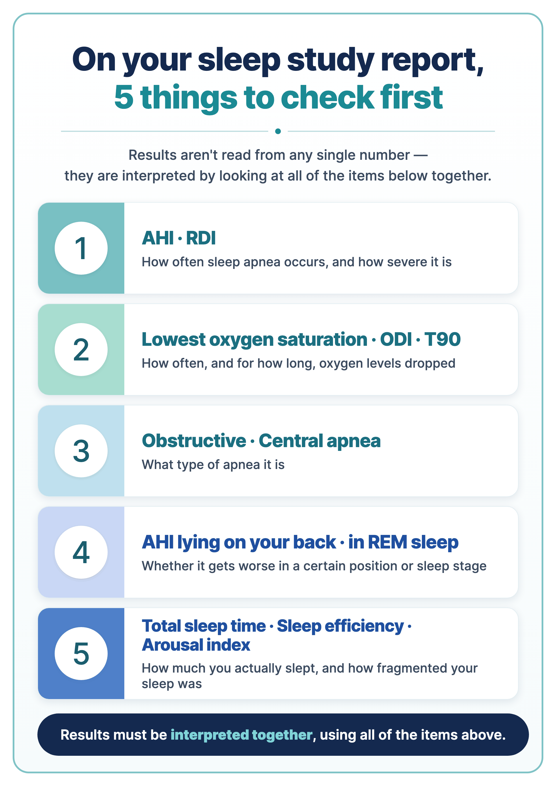
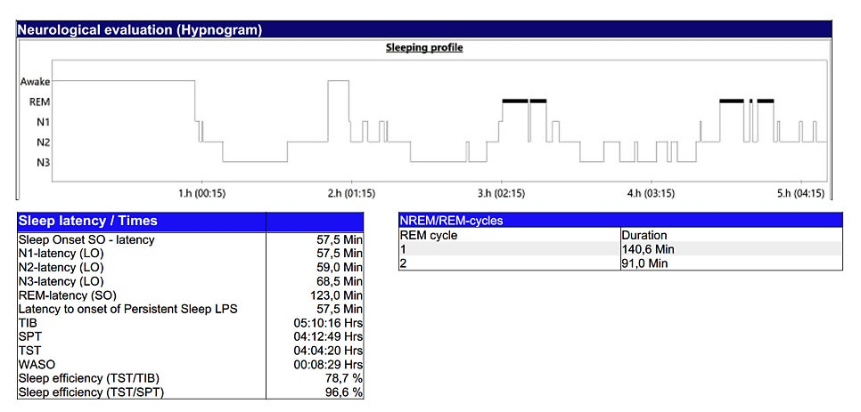

After a sleep study (polysomnography, PSG), many people receive a report full of English abbreviations and numbers — AHI, ODI, T90, N1, N2, N3… — and have no idea what they mean. Here is a simple, item-by-item explanation of what each one means and why it matters.
First, an important note: this is a general explanation to help you understand your report. Actual diagnosis and treatment decisions are always made from your doctor's overall interpretation. The same number can mean different things for different people.
- AHI · RDI — how often breathing is disrupted, and how severe sleep apnea is
- Lowest oxygen · ODI · T90 — how often and for how long oxygen levels dropped
- Obstructive vs central apnea — what type of apnea it is
- AHI when lying on your back and in REM sleep — whether it is worse in certain positions or stages
- Total sleep time · sleep efficiency · arousal index — how much you actually slept and how fragmented it was

In this article 10 sections · 7 min read
- 1. The first number we look at — AHI (apnea–hypopnea index)
- 2. Read alongside AHI — RDI
- 3. Just as important as AHI — oxygen measures
- 4. Sleep quality — sleep architecture
- 5. Types of apnea — obstructive vs central
- 6. The effect of position and REM sleep
- 7. Other measures — arousal index and PLMI
- Why one number isn't enough
- How is treatment decided?
- Worked example: how AHI is calculated
1. The first number we look at — AHI (apnea–hypopnea index)
AHI is the average number of times per hour of sleep that breathing stops completely (apnea) or becomes shallow (hypopnea). It is the basic measure of sleep apnea severity.
| Adults | AHI (events per hour) |
|---|---|
| Normal | Under 5 |
| Mild | 5 to under 15 |
| Moderate | 15 to under 30 |
| Severe | 30 or more |
For example, an AHI of 20 means breathing was disrupted about 20 times an hour — roughly once every 3 minutes. (These categories are for adults; different criteria apply to children.)
In an in-lab PSG, AHI is calculated per hour of actual sleep. Most limited-channel home sleep apnea tests do not record EEG, so they usually report an REI (respiratory event index) based on monitoring or analysis time rather than directly measured sleep time. Some home systems include EEG or estimate sleep differently; check the method used in your report. It's worth checking which type of test you had and how the index was calculated.
2. Read alongside AHI — RDI
RDI is usually AHI plus RERAs (respiratory effort–related arousals): events that don't meet the definition of apnea or hypopnea, but where the airway narrows, breathing effort increases and sleep is briefly interrupted on the brain-wave recording.
If RDI is almost the same as AHI, most of the breathing disturbance is apneas and hypopneas. If RDI is higher, additional RERAs were seen. RDI definitions vary between reports, so your doctor interprets it according to the lab's definition.
3. Just as important as AHI — oxygen measures
When breathing is blocked, blood oxygen falls. AHI tells you how often breathing was disrupted; oxygen measures tell you how much oxygen you lacked as a result. The same AHI can come with very different depths and durations of oxygen drops.
| Measure | What it means |
|---|---|
| Lowest SpO₂ | The lowest oxygen saturation recorded during sleep. A single lowest value alone doesn't define how significant the low oxygen was — we also look at how often it dropped, how long it stayed low, and whether drops line up with breathing events. |
| ODI (oxygen desaturation index) | The number of times per hour oxygen saturation fell by a set amount. Usually compared with AHI. |
| T90 | The percentage of time oxygen saturation was below 90%. Depending on the equipment, it may be based on sleep time or analysis time — check the definition on your report. |
| Mean SpO₂ | Your overall oxygen level through the night. A low average or long T90 may prompt us to look for other causes as well, such as lung disease or obesity hypoventilation syndrome. |
4. Sleep quality — sleep architecture
Sleep is made up of light sleep (N1, N2), deep sleep (N3) and dream sleep (REM), cycling several times through the night.
- N3 (deep sleep): important for physical recovery.
- REM (dream sleep): involved in processing memories and emotions.
Repeated breathing disturbances can fragment sleep and may alter deep and REM sleep, contributing to unrefreshing sleep in some people. Stage proportions and symptoms vary and should be interpreted with the full study. But a low N3 or REM percentage alone doesn't diagnose a condition or mean you "slept wrong." Stage proportions are influenced by age, medications, alcohol, how you felt on the test night, total sleep time and sleep apnea itself, so they are interpreted together with breathing events, arousals and symptoms.

Time terms that are often confusing
- TIB (time in bed): from lights-out in the lab to the end of the recording
- SPT (sleep period time): from first falling asleep to final awakening (including time awake in between)
- TST (total sleep time): all the time actually spent asleep
- WASO (wake after sleep onset): time spent awake after first falling asleep
- Sleep efficiency: the percentage of time in bed actually spent asleep
This explains the common question, "I was tested for 7 hours — why does it say I only slept 5?" Time in bed and time asleep are different things.
5. Types of apnea — obstructive vs central
- Obstructive: you try to breathe, but the airway in the throat is blocked so air can't pass. Most sleep apnea is this type.
- Central: the brain briefly doesn't send the signal to breathe.
- Mixed: a combination of both.
This matters because treatment (including the type of positive airway pressure device) can differ by type.
6. The effect of position and REM sleep
For some people, apnea is much worse when lying on their back or during REM sleep. Position- and stage-specific numbers can show whether side-sleeping might help, or whether things get worse in the early morning. If you slept in only one position during the test, though, this is harder to judge.
7. Other measures — arousal index and PLMI
Arousal index: how many times per hour the brain briefly woke during sleep. Most arousals are so short you won't remember them. They can be caused by breathing events, leg movements, noise or occur spontaneously. A high value means sleep is repeatedly fragmented, so you may not feel refreshed even after a long sleep.
PLMI (periodic limb movement index): how many times per hour the legs moved repeatedly at regular intervals. A high number alone doesn't diagnose restless legs syndrome or periodic limb movement disorder. We look at leg discomfort, insomnia, daytime fatigue, whether the movements cause arousals, and how they change after sleep apnea treatment. The diagnosis depends on symptoms, not just the number.
Why one number isn't enough
As you can see, a sleep study can't be summed up by AHI alone. The same AHI can mean different things — and lead to different treatment — depending on how far oxygen dropped, whether deep sleep was preserved, and which type and position predominates. That's why the report needs to be interpreted as a whole.
How is treatment decided?
The main treatment for obstructive sleep apnea is CPAP (continuous positive airway pressure). A mask delivers steady air pressure during sleep to keep the airway from collapsing. Because it opens the airway mechanically rather than working as a drug, its effect is relatively immediate. It is especially considered first for moderate or severe sleep apnea, or when oxygen drops are significant.
Depending on severity, symptoms, weight, the structure of the tonsils, nose and jaw, and your preferences, weight management, positional therapy, an oral appliance or ENT surgery may also be considered.
In Korea, CPAP is covered by National Health Insurance when certain criteria are met. Detailed criteria can change, so whether you qualify is best confirmed at your consultation.
What we explain at your results consultation
- Whether you have sleep apnea, and how severe it is
- How far your oxygen saturation dropped
- Whether it is obstructive or central, and whether position or REM sleep play a role
- Whether treatment is needed — and which to prioritize: CPAP, weight management, surgery or an oral appliance
Worked example: how AHI is calculated
AHI is calculated with total sleep time (TST) as the denominator, not time in bed.
Illustrative calculation only—not a recalculation of the report shown above: suppose an adult PSG records 63 scored apneas and hypopneas during 4 h 4 min 20 s of total sleep time. The AHI would be approximately 15.5 events per hour, in the adult moderate range. If time in bed were 5 h 10 min 16 s, dividing the same event count by that interval would give approximately 12.2 per hour; that value is not the PSG AHI because the denominator is not total sleep time. These assumed values do not establish the diagnosis or severity of the person whose hypnogram is shown.
Adult AHI categories: mild, 5 to <15; moderate, 15 to <30; severe, ≥30 events per hour.
This article is an English adaptation of a Korean post by Dr. OH JUNGHO. It is general health information, not a diagnosis or treatment plan for any individual. Results and suitability of any test or treatment differ from person to person — please consult a doctor about your own situation.